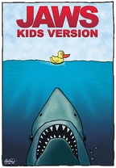
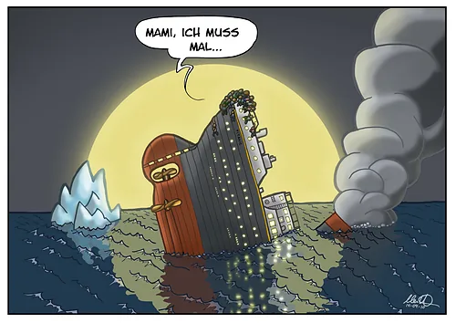
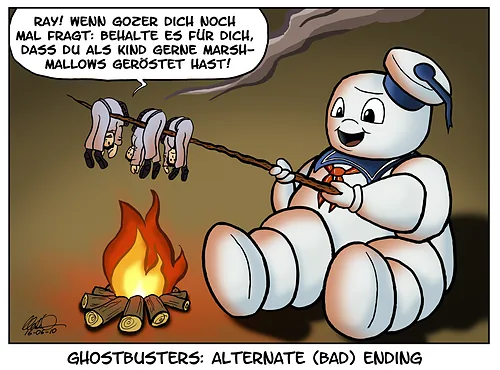
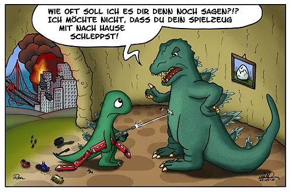
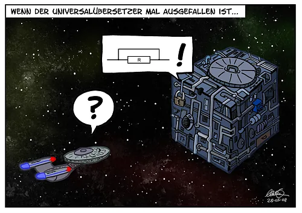
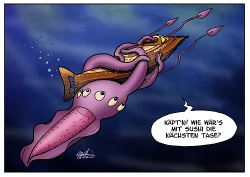
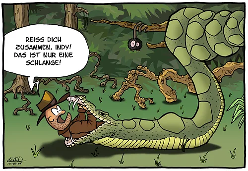
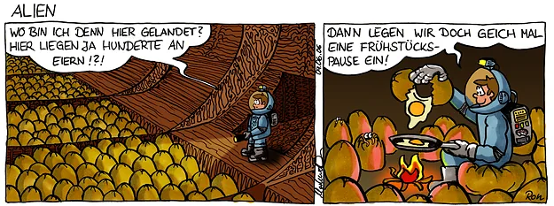
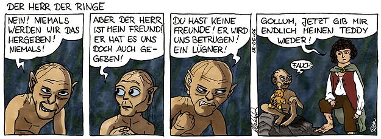

cartoons.de
cartoons.deFilm-Parodien – Cartoons zu Filmen

Eine Hommage an beliebte Kinofilme. Ich werde mir wohl nach und nach jeden Kultfilm vornehmen und meine Version hierzu zeichnen.
Ein Archiv der existierenden Film-Cartoons finden Sie in meiner Galerie über Film-Parodien der Comic-Community toonsUp!
Auswahl an Film-Cartoons






Auswahl an Film-Parodien in Comic-Strip-Form


Impressum · Datenschutz©
2004–2026 Ronald Markworth